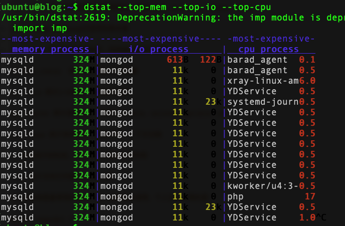

多功能系统资源统计生成工具（ versatile tool for generating system resource statistics）。在获取的信息上有点类似于top、free、iostat、vmstat等多个工具的合集，官方解释为vmstat、iostat、ifstat等工具的多功能替代品，且添加了许多额外的功能（Dstat is a versatile replacement for vmstat, iostat and ifstat. Dstat overcomes some of the limitations and adds some extra features.）；其结果可以保持到csv文件，使用脚本或第三方工具对性能进行分析利用（如通过监控平台监控，也可以保持到数据库）。在Centos 6.x系统上安装基本服务器即默认安装，而在其他操作系统可能需要手动安装。
#centos
yum install dstat
# ubuntu
apt-get install dstat与许多命令一样，dstat命令有默认选项，执行dstat命令不加任何参数，它默认会收集-cpu-、-disk-、-net-、－paging-、-system-的数据，一秒钟收集一次。 默认输入 dstat 等于输入了dstat -cdngy 1或dstat -a 1。
dstat的用法如下：
dstat [-afv] [options..] [delay [count]]使用 dstat -h查看全部选项，这里不逐一列举，下面简单介绍下常用选项
常用选项如下：
直接跟数字，表示#秒收集一次数据，默认为一秒；dstat 5表示5秒更新一次
-c,--cpu 统计CPU状态，包括 user, system, idle（空闲等待时间百分比）, wait（等待磁盘IO）, hardware interrupt（硬件中断）, software interrupt（软件中断）等；
-d, --disk 统计磁盘读写状态
-D total,sda 统计指定磁盘或汇总信息
-l, --load 统计系统负载情况，包括1分钟、5分钟、15分钟平均值
-m, --mem 统计系统物理内存使用情况，包括used, buffers, cache, free
-s, --swap 统计swap已使用和剩余量
-n, --net 统计网络使用情况，包括接收和发送数据
-N eth1,total 统计eth1接口汇总流量
-r, --io 统计I/O请求，包括读写请求
-p, --proc 统计进程信息，包括runnable、uninterruptible、new
-y, --sys 统计系统信息，包括中断、上下文切换
-t 显示统计时时间，对分析历史数据非常有用
--fs 统计文件打开数和inodes数
以上这些就是最常用的选项，而一般都组合使用，个人比较常用的是：
dstat -cmprdnl 5r:运行的和等待(CPU时间片)运行的进程数，这个值也可以判断是否需要增加CPU(长期大于cpu核数)
b:处于不可中断状态的进程数，常见的情况是由IO引起的
swpd: 切换到交换内存上的内存(默认以KB为单位)。如果 swpd 的值不为0，或者还比较大，比如超过100M了，但是 si, so 的值长期为 0，这种情况我们可以不用担心，不会影响系统性能。
free: 空闲的物理内存
buff: 作为buffer cache的内存，对块设备的读写进行缓冲
cache: 作为page cache的内存, 文件系统的cache。如果 cache 的值大的时候，说明cache住的文件数多，如果频繁访问到的文件都能被cache住，那么磁盘的读IO bi 会非常小。
si: 交换内存使用，由磁盘调入内存
so: 交换内存使用，由内存调入磁盘
内存够用的时候，这2个值都是0，如果这2个值长期大于0时，系统性能会受到影响。磁盘IO和CPU资源都会被消耗。
我发现有些朋友看到空闲内存(free)很少或接近于0时，就认为内存不够用了，实际上不能光看这一点的，还要结合si,so，如果free很少，但是si,so也很少(大多时候是0)，那么不用担心，系统性能这时不会受到影响的。
bi: 从块设备读入的数据总量(读磁盘) (KB/s)
bo: 写入到块设备的数据总理(写磁盘) (KB/s)
注:随机磁盘读写的时候，这2个 值越大（如超出1M），能看到CPU在IO等待的值也会越大
in: 每秒产生的中断次数
cs: 每秒产生的上下文切换次数
上面这2个值越大，会看到由内核消耗的CPU时间会越多
usr: 用户进程消耗的CPU时间百分比
us 的值比较高时，说明用户进程消耗的CPU时间多，但是如果长期超过50% 的使用，那么我们就该考虑优化程序算法或者进行加速了(比如 PHP/Perl)
sys: 内核进程消耗的CPU时间百分比
sys 的值高时，说明系统内核消耗的CPU资源多，这并不是良性的表现，我们应该检查原因。
wai: IO等待消耗的CPU时间百分比
wa 的值高时，说明IO等待比较严重，这可能是由于磁盘大量作随机访问造成，也有可能是磁盘的带宽出现瓶颈(块操作)。
idl: CPU处在空闲状态时间百分比
--top-(io|bio|cpu|cputime|cputime-avg|mem) 通过这几个选项，可以看到具体是那个用户那个进程占用了相关系统资源，对系统调优非常有效。如查看当前占用I/O、cpu、内存等最高的进程信息可以使用
dstat --top-mem --top-io --top-cpu
dstat除了可以获取系统关键信息外，还可以获取其他应用信息，如通过下列选项，可以获取到其他一些常用应用信息：
--postfix 显示postfix队列大小
--sendmail 显示sendmail队列大小
--ntp 显示ntp服务器时间
--nfs3 获取nfs客户端信息
--nfsd3 获取nfs服务器信息，不过nfs服务器版本需为第三版才可以，该选项还有更多用法，可以参考man帮助获取
--mysql5-（cmds|conn|io|keys ） 获取mysql5相关信息